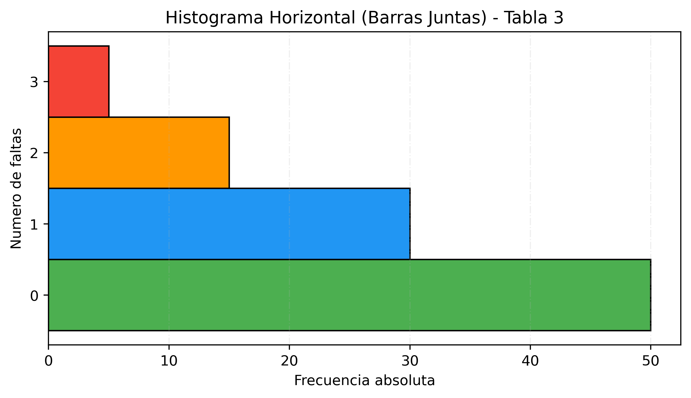
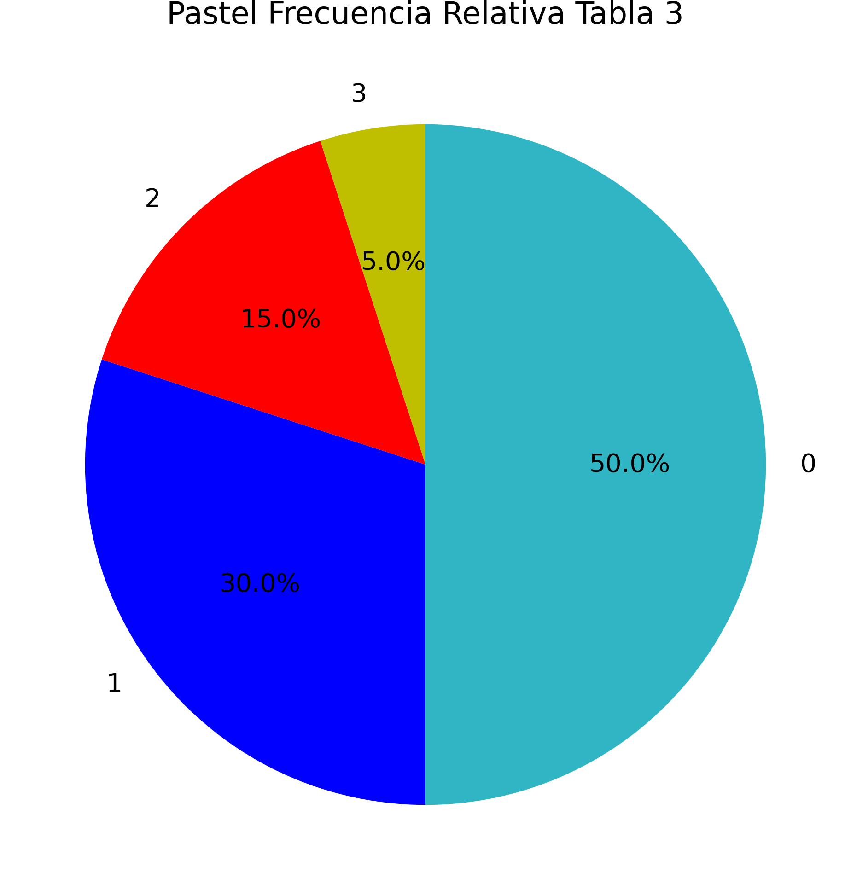
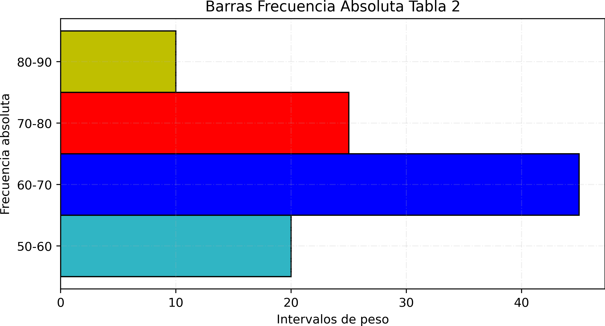
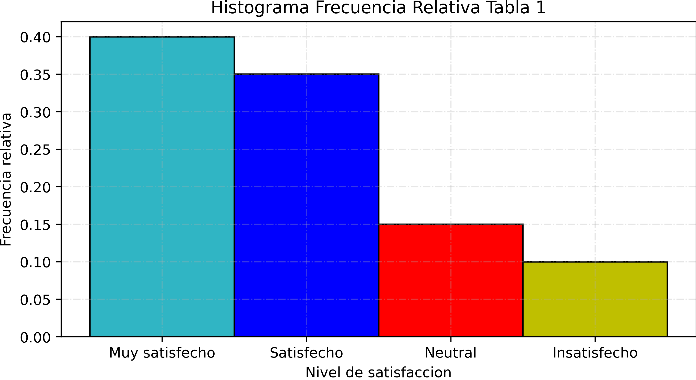
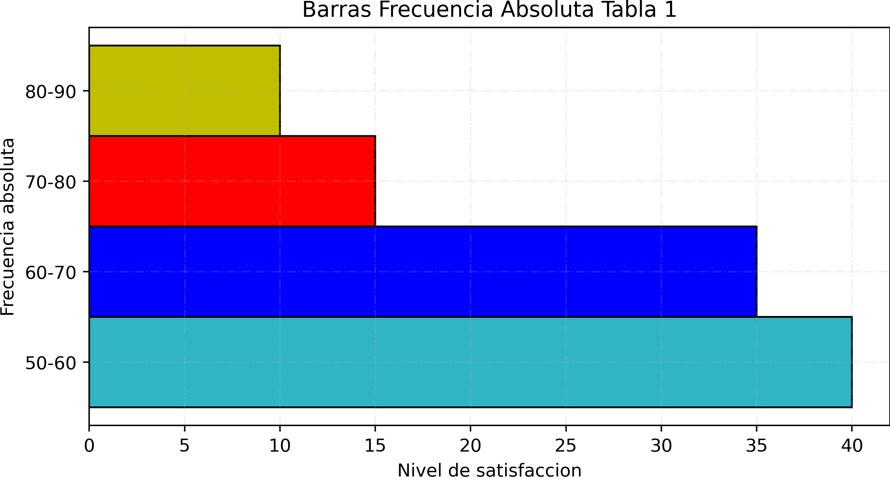

1. Variable Cuantitativa Discreta: Faltas al Mes
¿Cuántas veces faltas a tus clases? Esto fue lo que se pregunto a estudiantes de el bachillerato cbtis 83 muchos de los estudiantes dieron respuestas muy similares
Datos recolectados (n = 100)
0,0,0,0,0,0,0,0,0,0,0,0,0,0,0,0,0,0,0,0, 0,0,0,0,0,0,0,0,0,0,0,0,0,0,0,0,0,0,0,0, 0,0,0,0,0,0,0,0,0,0, 1,1,1,1,1,1,1,1,1,1,1,1,1,1,1, 1,1,1,1,1,1,1,1,1,1,1,1,1,1,1, 2,2,2,2,2,2,2,2,2,2,2,2,2,2,2, 3,3,3,3,3
| Clase | fi | hi | Hi |
|---|---|---|---|
| 0 | 50 | 0.50 | 0.50 |
| 1 | 30 | 0.30 | 0.80 |
| 2 | 15 | 0.15 | 0.95 |
| 3 | 5 | 0.05 | 1.00 |
2.1 - Evolución de Inasistencias
.png)
2.2 - Histograma de Faltas

2.3 - Barras Horizontales de Faltas
2.4 - Distribución de Faltas (%)
2.5 - Polígono de Frecuencias
.png)
2. Variable Cuantitativa Continua: Peso en kg
En un gimnasio de Actopan se pesó a los clientes para observar la distribución del peso.
Datos recolectados (n = 100)
55, 55, 55, 55, 55, 55, 55, 55, 55, 55, 55, 55, 55, 55, 55, 55, 55, 55, 55, 55, 65, 65, 65, 65, 65, 65, 65, 65, 65, 65, 65, 65, 65, 65, 65, 65, 65, 65, 65, 65, 65, 65, 65, 65, 65, 65, 65, 65, 65, 65, 65, 65, 65, 65, 65, 65, 65, 65, 65, 65, 65, 65, 65, 65, 65, 75, 75, 75, 75, 75, 75, 75, 75, 75, 75, 75, 75, 75, 75, 75, 75, 75, 75, 75, 75, 75, 75, 75, 75, 75, 85, 85, 85, 85, 85, 85, 85, 85, 85, 85
| Clase | Li | Ls | Marca | fi | hi | Hi |
|---|---|---|---|---|---|---|
| [50–60) | 50 | 60 | 55 | 20 | 0.20 | 0.20 |
| [60–70) | 60 | 70 | 65 | 45 | 0.45 | 0.65 |
| [70–80) | 70 | 80 | 75 | 25 | 0.25 | 0.90 |
| [80–90] | 80 | 90 | 85 | 10 | 0.10 | 1.00 |
3.1 - Evolución de Peso
.png)
3.2 - Histograma de Peso

3.3 - Barras Horizontales de Peso
3.4 - Distribución de Peso (%)
.png)
3.5 - Polígono de Frecuencias
.png)
3. Variable Cualitativa: Nivel de Satisfacción
En el Instituto Tecnologico Dhay diferentes acividades complementarias, futboll, VEX, ajedrez y cursos, se hizo una encuesta ah diferentes estudiantes a lo largo de el campus y se les pregunto que tan satisfechos estan con su complementarias y de acuerdo a sus respuestas estos fueron los datos recolectados.
Datos recolectados (n = 100)
Muy satisfecho, Muy satisfecho, Muy satisfecho, Muy satisfecho, Muy satisfecho, Muy satisfecho, Muy satisfecho, Muy satisfecho, Muy satisfecho, Muy satisfecho, Muy satisfecho, Muy satisfecho, Muy satisfecho, Muy satisfecho, Muy satisfecho, Muy satisfecho, Muy satisfecho, Muy satisfecho, Muy satisfecho, Muy satisfecho, Muy satisfecho, Muy satisfecho, Muy satisfecho, Muy satisfecho, Muy satisfecho, Muy satisfecho, Muy satisfecho, Muy satisfecho, Muy satisfecho, Muy satisfecho, Muy satisfecho, Muy satisfecho, Muy satisfecho, Muy satisfecho, Muy satisfecho, Muy satisfecho, Muy satisfecho, Muy satisfecho, Muy satisfecho, Muy satisfecho, Satisfecho, Satisfecho, Satisfecho, Satisfecho, Satisfecho, Satisfecho, Satisfecho, Satisfecho, Satisfecho, Satisfecho, Satisfecho, Satisfecho, Satisfecho, Satisfecho, Satisfecho, Satisfecho, Satisfecho, Satisfecho, Satisfecho, Satisfecho, Satisfecho, Satisfecho, Satisfecho, Satisfecho, Satisfecho, Satisfecho, Satisfecho, Satisfecho, Satisfecho, Satisfecho, Satisfecho, Satisfecho, Satisfecho, Satisfecho, Satisfecho, Neutral, Neutral, Neutral, Neutral, Neutral, Neutral, Neutral, Neutral, Neutral, Neutral, Neutral, Neutral, Neutral, Neutral, Neutral, Insatisfecho, Insatisfecho, Insatisfecho, Insatisfecho, Insatisfecho, Insatisfecho, Insatisfecho, Insatisfecho, Insatisfecho, Insatisfecho.
| Clase | fi | hi | Hi |
|---|---|---|---|
| Muy satisfecho | 40 | 0.40 | 0.40 |
| Satisfecho | 35 | 0.35 | 0.75 |
| Neutral | 15 | 0.15 | 0.90 |
| Insatisfecho | 10 | 0.10 | 1.00 |
1.1 - Evolución de Satisfacción
.png)
1.2 - Histograma de Satisfacción
1.3 - Barras Horizontales de Satisfacción
1.4 - Distribución de Satisfacción (%)
.png)
1.5 - Polígono de Frecuencias
.png)